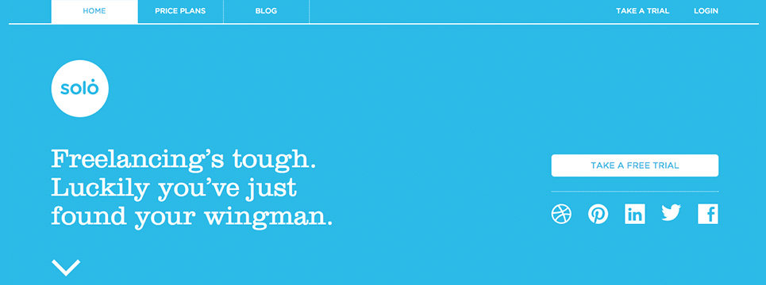

First and foremost, I AM AN ARTIST. I started my career as a graphic designer after graduating from Edinboro University of Pennsylvania and moving to Arizona. For the eight years I was in Arizona I was a picture framer at Michael's, Graphic Designer at a Print Shop, Web Designer/Developer at a Software Company, Computer Lab Manager at a High School, Freelance Photographer and a Graphic Design/Photography Teacher. Whew… that's a lot in 8 years. However, I have learned so much over the years and had the opportunity to experience a lot of different industries which makes me more valuable.
I am almost done with my Masters Degree which is in Web Design and New Media. I will be presenting my final thesis after learning what I need with my second Bachelors and with the hopes that it will be approved and I will officially be graduated!
This fall I did decide to go back to school for a Bachelors of Science in Web Design and Development. To you it may not make sense, but it was the best decision I made. I learned a lot with my Masters but didn't learn everything I was looking to learn. In my few months at Full Sail University, I have found what I was desiring to learn. You don't ever stop learning! :)
So that brings me to the now… I moved back to my hometown of Warren, PA with the realization that I like small towns and the big cities are good to visit but not to live. I like running into people that I know. I enjoy that people look you in the eye when walking by you and say hello and ask how you are doing. I like that rush hour consists of a few extra cars at a stop sign and the traffic lights turn to blinkers at night.
I am currently freelancing with graphic/web design and photography. I am re-establishing my screen printing business that I do as a side job/ hobby. I am also spending time on my art that I have been putting off, painting and drawing mostly. And I now make my own custom frames.

Component #1: Header
Target Audience
The target audience for Solo is predominantly freelancers who need an application to manage clients and prospects. They could be male or female as freelancing can include multiple industries. Mostly likely ranging in age from 30-50.
Client/User Needs
The first goal of the client/user would most likely be to try a free trial to see if it is what they need and that it's something they would like to use. Finding out the prices would be next important if not equally important so the client knows if he/she can afford something like this.
Critique
In my example that I found, they had used orange for there background. In their current site they use blue. In my opinion, I think the orange stands out and is more striking. The meaning of orange can be fun and ambitious, a good color to attract attention. The blue, however, is resembling trust and loyalty. All four adjectives can describe freelancers. The header is very clean and simple, which tells me their application is the same. They use bright, bold colors with a lot of contract between the background and the font that give it a strong, trusting feel.
Target Audience
The target audience for iRide service providers in the New York area. Most likey male aged between 40 and 50. A business man who wants an easy way to create a mobile app.
Client/User Needs
The client/users first goal would most likely be to choose one of the three call to action buttons. There ultimate goal however would be to use iRide for a mobile application to pair with their already established transportation business.
Critique
The first call to action button, "Find your Ride" is a bit confusing. The website targets the actual company/owner and this is implying to a user that you can find a ride. If a user looking to find a ride comes across this they might be disappointed to find out it's for service providers. The site uses darker colors implying seriousness. They use black that symbolizes power as well as an accent color of blue that represents trust and loyalty. All of these colors would attract a business man looking for a reliable company. The background is a motion graphic which represents the busy world of transportation which implies this app would make the drivers' job easier. Hovering over the buttons there is a blue transparent circle that gives a fun interactive effect to the site.
Target Audience
The target audience for Form Fifty Five is designers and developers looking for inspiration and to continue learning. Form Fifty Five consists of a team of creatives that posts designers, interviews, books, events, jobs, etc. that they find. Users are probably 20-30 looking to keep up with the trends and find inspiration.
Client/User Needs
The goal of the client would be to find information. This can be a little broad as there is a lot of information on this site. Someone could come purely for inspiration and some might come with a specific purpose.
Critique
Form Fifty Five users black and gray with a teal accent. In my opinion, the dark color doesn't necessarily work for this website. The color black and be used for power. There is a team of multiple designers so I don't really see any sense of power among any of them. They created this site to as a resource for other designers. Each post entry has a title, content, icons to share to social media and a comment button. If there are multiple images for a post they scroll within the post feed instead of having to go to another page. This allows for users to view all the information faster and easier.
Target Audience
The target audience for a contact form would be any user that would like to contact a company or person. Because this particular contact form was not found a specific page the audience can be very broad. Users would most likely be between 20 and 50, both male and female.
Client/User Needs
The contact form first starts out as a message with a mail button. Once the mail button is clicked/tapped then the form drops down. The users end goal is to send a message.
Critique
This form is ideal for a website that wants to display a contact form on multiple pages but not take up too much space. It has a little bit of interactivity making it a more exciting for the user. The pink here is bold and bright. It's more of a feminine color but can also represent youth.
Target Audience
The target audience for a social media timeline would be males and females, with the majority being females. Age range between 16 to 30 promdominantly. This particular timeline is to combine all your social media data into one.
Client/User Needs
The need for this timeline would be so the client/user can combine all of their social media data into one timeline. Their overall goal would be to connect with each social media platform they want.
Critique
This timeline is a sample for a plugin being sold. It's very basic looking with grays used for colors. My guess would be that the designer didn't want to compete with each of the social media's icons so they chose a netrual color. I don't feel that the look of this is very appealing.
Target Audience
The target audience for social media share buttons are anyone looking to share an article, photo, etc. Most likely aged 15-35. This could be a large range because so many people share on social media now.
Client/User Needs
The goal of the client/users needs would be to share something on their social media sites.
Critique
The color of these buttons resemble each of the individual social media platforms. The design of the buttons are bold enough to stick out but not enough to be distracting. The developer also has the option of using the icon and the social media platforms name or just the icon. Next to the buttons lists the number of shares subtly but to let people know how popular the information is.
Target Audience
The target audience for Dribbble is for designers and developers to post screenshots to show their work, process and current projects and get feedback from other designers and developers. The age range for designer and developers can range from 23-50. There are more men in the developer fields than women.
Client/User Needs
The goal of the login and registration is for a client/user to create an account to upload their work to in order to get feedback from other users in the community.
Critique
This login page allows a user to login by using their username/email or through twitter. The design is very simple and with the gray background the color of the sign in button, pink, and the twitter button really stand out. This is a very clean and modern design that gives the first impression designers are looking for.
Target Audience
The target audience for this footer is MMA fans. This site features MMA fighters and merchandise for fans. A mix of men and women, however more likely men. Their age ranges from 25 to 35.
Client/User Needs
The goal of the client/users for a footer is to duplicate the navigation and display other information to the users that might not be as important as the rest of the information at the top of the website. This is also a good place to put a newsletter email request.
Critique
The design for this footer is broke up into fourths. It displays the links clearly with a header. The dark grays and red create a powerful feel to imply strength. The red symbolizes passion, energy and intensity. It is a very strong and bold color which fits with the MMA theme.
Target Audience
The target audience for email subscribers would be for anyone trying to create or add to a list of contacts. Companys and people use this as a form to create an email list. They will then send out mass emails or coupons by mail. The client/user would most likely be 40-50 and a company or business owner.
Client/User Needs
The goal of the client/users would be for them to gather emails from users.
Critique
This form is very simple and straight to the point. It tells the user what will happen if they submit their email address. It also makes it very easy for them to submit their email address. They use dark colors with this form which creates good contrast with the red accent color. The layout is also very simple and not distracting on a site where there is more information.
Target Audience
This component is demo but the target audience would be any one that would need a progress bar. It could be used for submit buttons to show when they are sending. It can also be used before a page is load to let the user know how much progress has been made.
Client/User Needs
The client/user's need is only to be informed of the progress of the site.
Critique
The design of this is very simple but very effective. The bar uses the words "Loading..." to indicate what the action is. The blue is the main color of the bar and the purple is the progress that is being made. These colors work good because they don't compete with each other and are different enough to see the progress.
Target Audience
The target audience could be for someone with an online resume to show the levels of knowledge and skills they possess. The diagram could be used for interactive infographics as well.
Client/User Needs
The goal of the client/users needs would be to display the users information in a creative and interactive format.
Critique
The design of this is circular and creative. It shows a visual way to break down data. A full circle is 100% so by portioning the percentages out users can get a fast idea of what the amounts are.The colors start with bold and bright colors in the middle with lighter colors on the outside. This could represent other things as well, maybe areas they aren't as confident in.